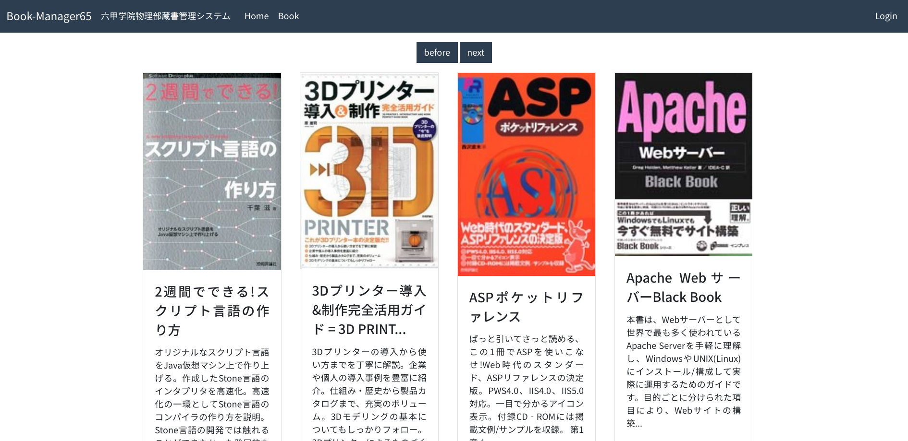

蔵書管理システム「Book Manager 65」はこちらから見ることができます。 
4月頃に部室の大掃除をした時、本棚の本を全て取り出し種類ごとに並び替えるという作業を行った。 折角の機会なので、部室にある本のデータベースを作りたいと誰かが言い出したのがこの蔵書管理システムを作ろうと思ったきっかけだ。
C#かjavaでネイティブアプリとして作るか、javascriptでウェブアプリとして作るかで少し悩んだ。
結局、ウェブアプリとして作ることにした。 現在の流行はウェブアプリのように感じたからだ。 Electronのようなウェブアプリをネイティブアプリ化する技術があるのでウェブで作っておけば幅広く対応できる。又、モバイル端末に対応しやすい点もウェブアプリの利点だ。
ポール・グレアム著「ハッカーと画家」では今後多くのソフトウェアがブラウザで動作するようになるのではないかと考察されていた（気がする）。
モバイル端末が広く浸透している現代で、PCとモバイル端末間の互換性の高いウェブ関連の技術を知っておきたいと思っていたため、結果としてこの蔵書管理システムは練習材料として丁度良い題材となった。
以上がこのシステムの全てである。できることが少ないシンプルで使いやすい。
Vue.jsを使用したウェブアプリ製作のフレームワークの一つ。 現在よく使われるjavascriptのフレームワークは、React/Vue/Angularの3つらしい。他の2つに比べて初心者にやさしいと噂されているVue.jsを学ぶことにした。 Vue.jsの機能を初心者にもさらに使いやすくしたのがNuxt.jsというフレームワークである。
とてもおすすめ。
Googleのサービス。ユーザーの認証システムやデータベースを提供している。制限があるが無料で使える。今回面倒な部分は全て任せた格好になる。
「PaaS（Platform as a Service）」の一種であり、Webサービスを公開する基盤を提供してくれるサービスだ。自前でサーバーを用意せずにウェブアプリをデプロイできるという、とてもありがたい代物。
一番力を入れたのは、書籍の登録画面である。 ISBN（国際標準図書番号）を入力することで、自動でタイトルや内容紹介などの本の情報を集めてくれるようにした。 本の情報を得るために、openBDというAPIを使わせて頂いた。
検索機能や分類の絞り込み表示など、あると便利な機能はたくさん思いつく。 又、本の一覧ページでのページネーションが使いにくいという欠点もある。 しかし、悲しいことに使ってくれる人がいないと思う1のでこの程度にしておく。 言い訳がましいが、そもそもウェブ技術の練習で作ったものであるので低機能でも許してもらいたい。
先輩が作った、似たような境遇のソフトウェアの前例があった。 ↩︎